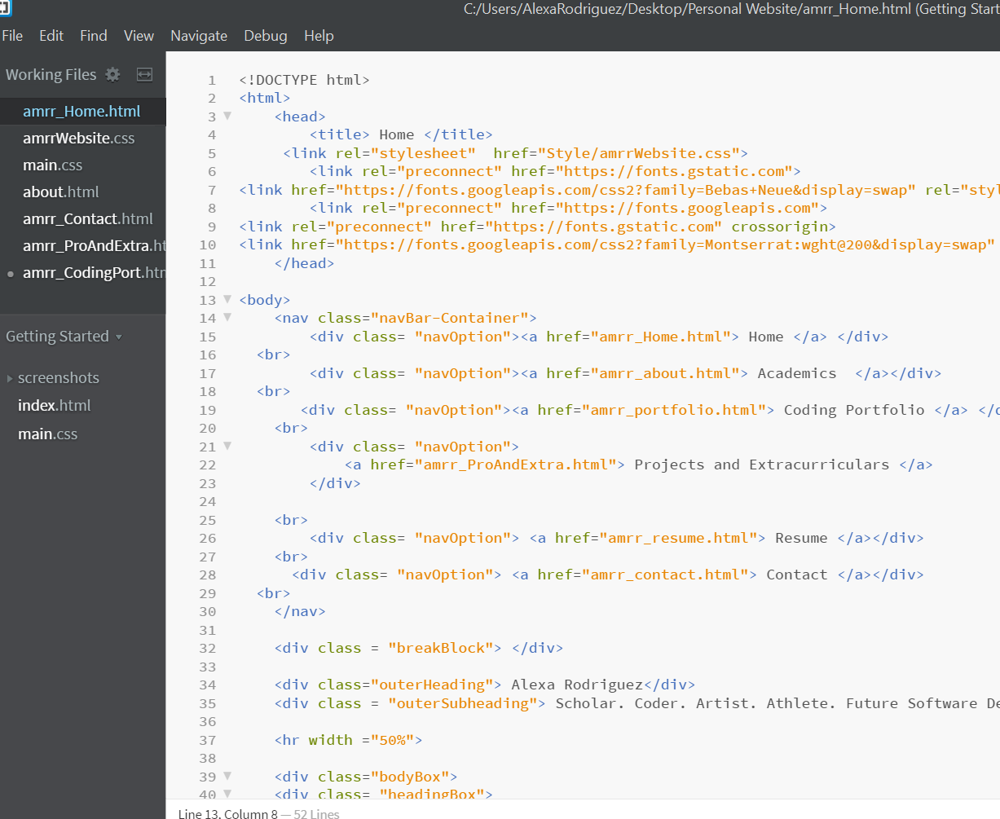
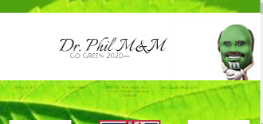
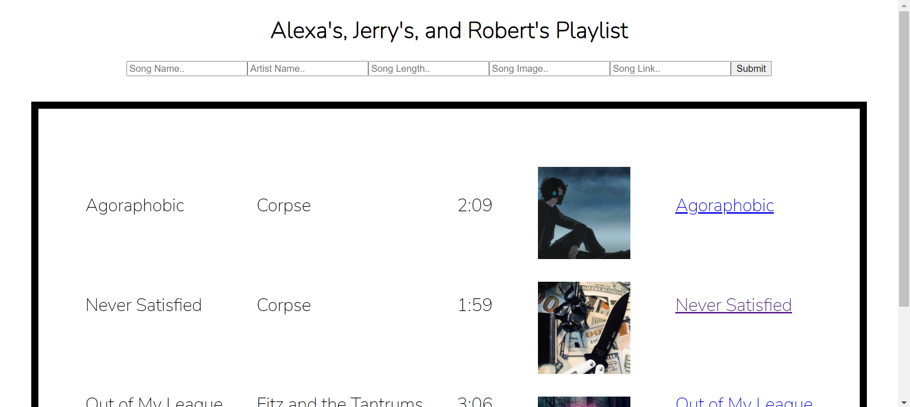
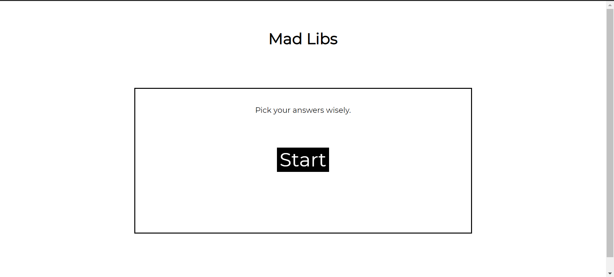
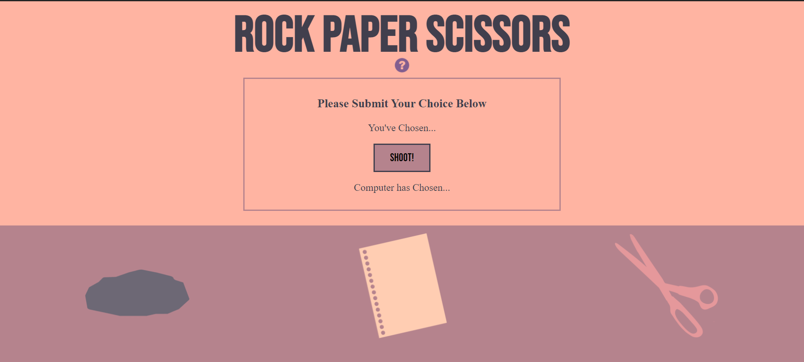

Some the coding projects I have worked on with the programs I am enrolled in.

Coding.
I started coding in summer of 2019, after 9th grade, when I participated in SMASH Academy at UC Berkeley. Before then, I had never had a CS class, and much less opened a coding program. I had grown up curious about tech and how things worked, but had always been a bit hesitant to try and break into the field. Having a class that started from the basics of HTML and CSS allowed me to become comfortable and find my passion for coding, which I was able to build on with SMASH Academy and Code Nation all throughout highschool.

In my first year with Code Nation, one of our assignments was to create a presidential website for a candidate of our choice. I decided to have fun, and while I did go a bit overboard with a fancy navbar tied to different places on the page, and even editing Dr. Phil M&M into various places in time, I loved being able to get creative with it while excercising new code syntax.
Languages Used: HTML and CSS

During my Code Nation Pandora Fellowship in 2021, we had a coding project that involved working collaboratively to create a working playlist. The playlist allows users to add the name of a song, artist, length, image and link onto a list of other songs through the input boxes available. I worked with my mentor Robbie and a classmate Jerry.
Languages Used: HTML, CSS and Javascript

In my first year with Code Nation as Aspire GSP, we did a Mad Libs project. It was one of the most jQuery heavy projects I worked on that year, since the very function of pluggin in user inputs into a word template was all jQuery.
Languages Used: HTML, CSS and jQuery

One of my proudest projects is this Rock, Paper, Scissors project. Not only did I edit custom assets and put together a color theme, but most importantly this was very jQuery heavy. It posed many challenges, but it works correctly and looks nice.
Languages Used: HTML, CSS and jQuery